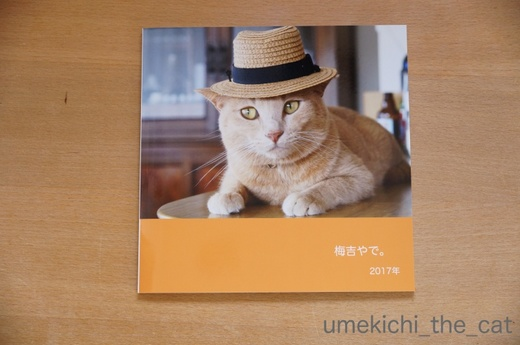
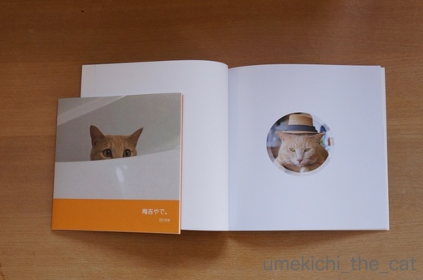
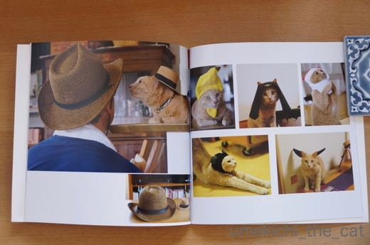
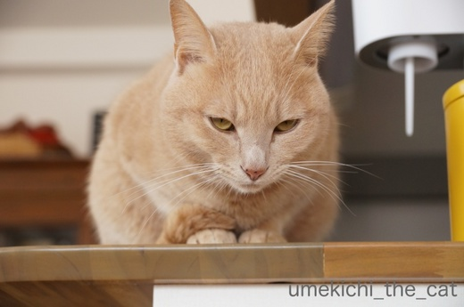
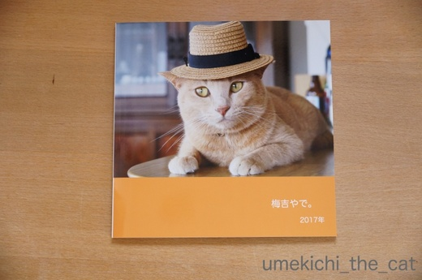
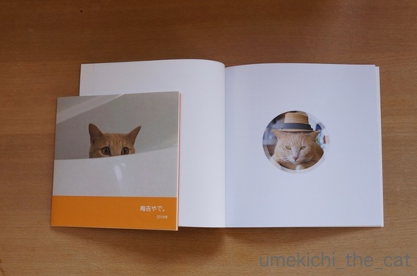
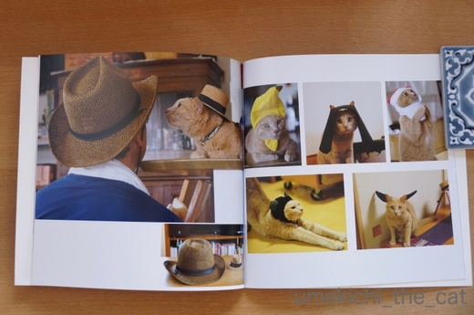
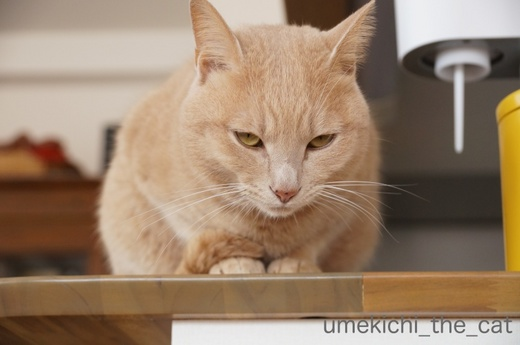

フォトブックが届きました [梅吉]
毎年年末にオーダーしてお正月休みにニヤニヤしながら眺める梅吉のフォトブックが先日届きましたー。
昨年内に手元に欲しかったのですが昨年一昨年と利用していたフォトブックのサイトに
なぜか写真がアップロードできなくて・・・
急遽他のフォトブックのサイトを探して使い勝手を確かめて、とかなり焦ったのですが
やっつけ仕事では満足いくのが出来ないわね、とお正月休みにゆっくりと作業しました。
で、今年はこうなりました。

「梅吉やで。」2017年バージョン![[ぴかぴか（新しい）]](https://blog.ss-blog.jp/_images_e/150.gif)

表紙のデザインは変えたくなかったので同じようにデザインしました＾＾
サイズは三回りくらい大きくなったかな。

その分使える写真の枚数も増えていろいろ収めることができました。
レイアウトのテンプレートも豊富でいろんなことができましたよ。
その分お値段も以前使っていたサイトよりも５倍くらいしましたが・・・(⌒_⌒;
でも画質が良い！キレイ！！

裏表紙にこんなことが出来たりしてヾ(*ΦωΦ)ﾉ
大満足の仕上がりでした。
今年もこのサイトで作っちゃおうかな・・・
利用したのはMY BOOKというサイトです。
ちなみに初回割引があったりして2600円くらい。
以前使っていたしまうまプリントは500円くらいで出来たのですが・・・
インスタの写真だと簡単にアップロード出来たのでインスタ写真で作りたい方は良いかも、です。
なぜ私のMacから写真のアップロードが出来ないのかは謎！

梅吉さん、今回の出来はいかがですか？

![[猫]](https://blog.ss-blog.jp/_images_e/101.gif) うむ！
うむ！
気に入っていただけたようです♡
 ↑ガブッと一押し↑
↑ガブッと一押し↑
昨年内に手元に欲しかったのですが昨年一昨年と利用していたフォトブックのサイトに
なぜか写真がアップロードできなくて・・・
急遽他のフォトブックのサイトを探して使い勝手を確かめて、とかなり焦ったのですが
やっつけ仕事では満足いくのが出来ないわね、とお正月休みにゆっくりと作業しました。
で、今年はこうなりました。

「梅吉やで。」2017年バージョン

表紙のデザインは変えたくなかったので同じようにデザインしました＾＾
サイズは三回りくらい大きくなったかな。

その分使える写真の枚数も増えていろいろ収めることができました。
レイアウトのテンプレートも豊富でいろんなことができましたよ。
その分お値段も以前使っていたサイトよりも５倍くらいしましたが・・・(⌒_⌒;
でも画質が良い！キレイ！！

裏表紙にこんなことが出来たりしてヾ(*ΦωΦ)ﾉ
大満足の仕上がりでした。
今年もこのサイトで作っちゃおうかな・・・
利用したのはMY BOOKというサイトです。
ちなみに初回割引があったりして2600円くらい。
以前使っていたしまうまプリントは500円くらいで出来たのですが・・・
インスタの写真だと簡単にアップロード出来たのでインスタ写真で作りたい方は良いかも、です。
なぜ私のMacから写真のアップロードが出来ないのかは謎！

梅吉さん、今回の出来はいかがですか？

気に入っていただけたようです♡
タグ：フォトブック

カフェオレ色の梅吉

梅吉 2023年8月10日 永眠


梅吉と出会った譲渡会

犬猫の理由なき殺処分ゼロ
妄想広告
UMEKICHI 光

爆発的に早い！
時々攻撃的！
Thanks to Mr.Boss365
爆発的に早い！
時々攻撃的！
Thanks to Mr.Boss365

ステキなフォトブック♪
大切な宝物が増えましたね(#^.^#)
どの写真も梅吉さんらしく
可愛いですね♪
by きぃ (2018-01-15 16:20)
表紙はあの写真に納得です。梅吉さんキマってますよね~。裏表紙の写真もいいし大きくなって良かったですよね。高くなっても梅吉さんのためなら惜しまないおかーさんですもの。
by zombiekong (2018-01-15 16:29)
おぉ、素敵なフォトブックが完成ですねぇ(^_^)
イケメン梅吉さん、さすがどんなコスプレもお似合い(^-^)
そしてちゃんと笑いを取るのも忘れずに完璧ですね!(^^)!
by ニッキー (2018-01-15 16:36)
わあ、素敵なフォトブック！
梅吉さん、帽子が似合う～ちょっと考えているような目つきに賢さが出てますね。
「梅吉やで」ぴったり～♪
いい写真がいっぱいありますもんね～コスプレ可愛い！
こんな風に作れるんですね～＾＾
by sana (2018-01-15 17:19)
フォトブック良いですね！
タイトルも梅吉やでと関西弁ですね(^^)
by ma2ma2 (2018-01-15 18:32)
表紙のお写真、これぞumekichiさん、いいですね～(*^▽^*)
かぶりものシリーズも充実していて納得のフォトブックです♪
写真データありすぎて、こういう形で気に入った写真を残しておかないと、なかなか遡って写真見るの大変ですよね^^;
by ゆきち (2018-01-15 18:34)
こんばんは
素敵なフォトブックですね！
「梅吉やで」がいいですねぇ～
by yhiga-siura (2018-01-15 19:37)
宝物が、また1つ増えましたね〜
表紙、本に良い紳士じゃ〜
被り物編、良いですね〜
次の機会の後ろ表紙には（是非）後ろ姿のお尻あたりを所望したいです（笑）
by kiki (2018-01-15 20:45)
これは素敵なフォトブックですね！
写り方も写し方も素晴らしいです！！
by yes_hama (2018-01-15 21:39)
わぁ！ステキなのができましたね。
利発そうな梅吉さん、モデルっぷりが板についてます。
フォトブック、いいですね〜♪
by nachic (2018-01-15 22:20)
私も、フォトブックは一冊だけ試しに注文したことがあります。
安いやつですが。写真を選んで配置するのが楽しいですよね。
梅吉さんがいっぱいのフォトブックで一生ものになりますね(^^)
by riverwalk (2018-01-15 22:21)
うわー、かっこいいフォトブックができあがりましたね！
麦わら帽子姿、決まってるぅ♪（*´∀｀*）
いいですね。こういうの。
わたしの場合は写真選びに１年かかりそーです・・・(｡-_-｡)
by Ja-Kou66 (2018-01-15 23:22)
良いですねぇ。
私も作ってみたいなぁ。
それに使えそうな写真を撮らないと＾＾；
by ぽちの輔 (2018-01-16 07:00)
フォトブック、これはいいですね!
うちの猫もこんなの作っておけば良かったな～とつくづく思いました。
でも、写真は山ほどあるので、時々眺めては懐かしんでます。
そう言えば以前、まだ活動中のミドリガメ次郎さんが亀の日めくりカレンダーに選ばれたことがありました(^^;)
by kou (2018-01-16 07:41)
わー！
いいのが出来ましたね！！
やっぱり帽子が似合うわー(≧∀≦)
by よーちゃん (2018-01-16 07:44)
フォトブック、素敵ですぅーーー！！
梅吉さんと同じ毛色のオレンジカラーの中には、
ニヒルでクールでオチャメな、梅吉さんがいっぱい(^^)/
これは、ご本ニャンもさぞ大満足でしょうね。
世界でオンリーワンの宝物が、また1つ増えましたね♪
by morichan (2018-01-16 11:59)
かっこいい梅吉君！たしかに喜んでますね！
毎年決まった時期にやるのはいいですね。
写真の整理もできそう。
by BillK-ko (2018-01-16 16:41)
素敵なフォトブック。販売してほしいよ～～っ。
毎年１年分の写真の中から選んで・・・。愛情いっぱいの１冊だね(^-^)
梅吉くんも満足！また１年、楽しい写真をたくさん撮ってもらおうね。
by emi (2018-01-16 16:50)
ごめんなさ～い。なんだか空欄が～。
by emi (2018-01-16 16:52)
素敵なフォトブックができましたねヽ(^o^)丿
梅吉くん、けっこう被り物 得意なんだ～♪
イケメンだし、キマッテる☆＾＾
以前、私も夫婦の旅行写真を、しまうまプリントで
作ったことがあるのですが、この会社のは
裏表紙のプリントも素敵に出来るのですね。
フォトブックが増えていくの楽しみですね(*^^*)
by マーヤ (2018-01-16 20:14)
しまうまプリントは、インスタの友達がみんな作っていて
存在を知りました。
梅吉君のMY BOOKで作ったフォトブック、めちゃめちゃ綺麗なの分かる！
そして可愛いな～
そうそう。こういうのはちゃんと時間を取ってじっくり取り組んだ方が
満足な仕上がりになるよね♪
けっこう、なにげにかぶりものしてるのに笑った(笑)
by リュカ (2018-01-17 11:02)
わあ～こんな素敵な作品が作れるんですねー♪
すごくいいです！ご両親の愛も溢れるほど感じます。幸せな王子やな～ヽ(〃^・^〃)ﾉ
by Ginger (2018-01-17 13:23)
フォトブックいいですね！って去年もそう思って「今年はうちも」って思って今日に至ります。へへへ(-"-)
お値段5倍は可愛くないですが画質がいいのは良いですね(#^^#)
by palpal (2018-01-17 14:38)
きぃさん＞
今回で３冊目ですがどれも大切な思い出が詰まっていますよー＾＾
写真選定は悩みながらも楽しかったです！
zombiekongさん＞
写真はPCで見られるしある程度抜粋したものはブログにまとまっています。
なのでフォトブックは画質が多少悪くても安いのでいいや・・・・
と思っていたのですが画質が良いのはやっぱり良いですね〜。
綺麗なフォトブックの誘惑に負けそうです(^▽^;)
ニッキーさん＞
ちゃんと「オチ」の写真があるところが梅吉らしいでしょう？(≧ω≦｡)
おかげでメリハリの効いたフォトブックになりましたよー。
今年もたくさんのオチを見せて欲しいなぁ。
sanaさん＞
賢いだなんてー！下僕、喜んじゃいます＾＾
確かに自分に都合の良いことはすぐ覚えてくれます。が
都合の悪いことは一向に覚えてくれません (^▽^;)
これもある意味賢い、ですよねーwww
sanaさんの素敵なお人形さんたちの写真も
フォトブックまとめるのはいかがですか？
フォトジェニックな子ばかりだからカタログみたいになりそう！
ma2ma2さん＞
梅吉らしく「やで。」で締めて見ました＾＾
梅吉です、だったら他所のねこみたいだしwww
ゆきちさん＞
去年のベストショット（目つきの可愛い方）を表紙にしました。
丸抜きの目つきの悪い方(ブログ写真2枚目）が本当は梅吉らしいんですけれどwww
写真は毎日どんどん増えますねー(^▽^;)
今回過去一年分の写真を見るのも大変でした。
でも楽しい！！
yhiga-siuraさん＞
梅吉らしく関西弁でキメてみましたＯ(≧▽≦)Ｏ
今回のフォトブックも力作！と自負しております＾＾
kikiさん＞
私は夏休みの小僧、と思っていたので紳士と言っていただけて光栄です＾＾
後ろ表紙におちり！
それは思いつきませんでした！！今年やろうかしらw
おちりの写真をたくさん撮らなくちゃ(≧▽≦)
yes_hamaさん＞
私的厳選写真のフォトアルバムができました＾＾
レイアウトを決めたり楽しい作業でしたよ！
nachicさん＞
我が家に来た日から写真をバシバシ撮っているせいか
カメラを嫌がったりすることはありません。
むしろ自然な表情を撮りたいとカメラを向けると
カメラ目線に・・・(^▽^;)
「わし もでる」と思っているかもー(≧ω≦｡)
riverwalkさん＞
そうなんです。
「写真を選ぶのが大変」と言いながらも楽しい作業だったりして＾＾
今年一年の梅吉を振り返る良い機会でもあります。
またちょっと顔が大人になったかな、なんて思いました。
Ja-Kou66さん＞
麦わら帽子姿は昨年のベストショットでーす＾＾
Ja-Kou66さんも３にゃんさんの可愛い写真が山のようにありそう！
写真が選べないのわかりますー！！
ぽちの輔さん＞
外猫軍団は１ニャンずつ別の本にしていただきたいです！
それじゃないと見分ける自信がありませんー(⌒_⌒;
kouさん＞
写真のストックをたくさんお持ちなら今からでもいかがですか？
でも作業しているうちに悲しくなっちゃうかな・・・
ええっ！亀の日めくりカレンダー！？365日亀！！！
みなさん自慢の亀さんのカレンダー、見てみたい・・・
よーちゃん＞
麦わら帽子姿決まっているでしょう？Ｏ(≧▽≦)Ｏ
なにげにおっととお揃いなのがお気に入りの一枚です＾＾
morichanさん＞
あ！梅吉のテーマカラー、お解り頂けたのですねーＯ(≧▽≦)Ｏ
毛色と同系色の元気なビタミンカラーが
梅吉にぴったりかなと思っています。
本の中身はアホでやんちゃな梅吉もてんこ盛りですよー！
BillK-koさん＞
そうそう！今年一年の梅吉を振り返りながらの作業でした＾＾
そして「梅吉はやっぱりアホやな・・・（褒め言葉）」と
ニヤニヤしちゃいました(≧▽≦)
emiさん＞
私的厳選写真のフォトブック、記憶の整理をするのにも
一年の出来事を思い返すのにも良い作業でしたー。
去年の一番の出来事は「お薬生活開始」と少々残念なものでしたが・・・
今年はどんな写真が撮れるのか今から楽しみですよー！
空欄、あははＯ(≧▽≦)Ｏ
私もよくやっちゃいます！
空欄にはemiさんのたっくさんの愛が詰まっていると思ってマス(^_－)☆
マーヤさん＞
こうして見ると結構被っているんですよね。
苦手なものが克服できた昨年だった！？(^▽^;)
ご夫婦の旅行をフォトアルバムにって素敵ですねー！
我が家は旅行に行っても風景の写真しか撮らず
一緒に写った写真は一枚もありません・・・www
リュカさん＞
しまうまプリントはお値段もお手軽で良いサイトなんですよー。
今回は使えなくって残念でした。
が、MY BOOKの綺麗さを知ってしまったからもう戻れないかも (⌒_⌒;
さらにお値段高額なフジカラーのフォトブックなんてどんだけ綺麗なんだろう・・・
流石にそこまでお金は出しませんけどー！
被り物、苦手苦手と言いながら写真を見返すと結構あったの。
思わず特集ページを作っちゃいましたwww
Gingerさん＞
素人が撮ったイマイチ写真でもフォトブックにすると
立派に見えちゃうから不思議です＾＾
「被写体が梅吉」というフィルターがかかっているので
飼い主には燦然と輝く一冊になりました＾＾
by ちぃ (2018-01-17 14:46)
palpalさん＞
そうだー！去年もそのお言葉を聞いたわー＾＾
４年に一冊、にしますかwww
もし作るなら少々高くても画質の良い方をお勧めしますよ（実感！）
by ちぃ (2018-01-17 14:49)
梅吉さん特製フォトブック、綺麗に仕上がって
いますね♬かわいく写って梅吉さんも満足そう？
私はブログに載せない家族写真をフォトブックに
していますが、軽くて嵩張らず綺麗、価格以外
は気に入っています（笑）。毎年一冊作るのも
記念になっていいですよね！
by うりくま (2018-01-17 20:01)